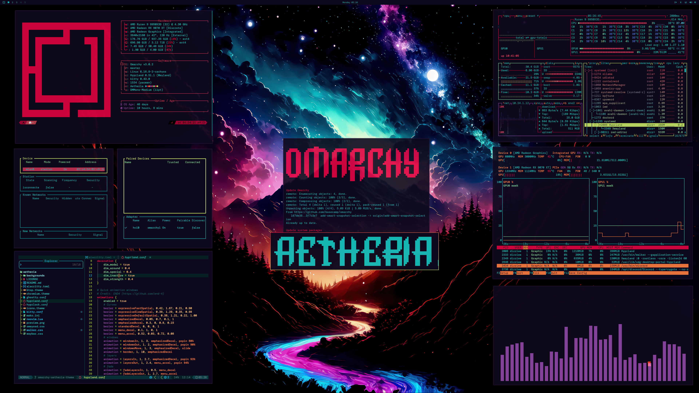

好的体验不是只靠一个模型。工作环境、网络、模型和解决问题的方法，缺一项都会影响结果。
两者都适合开发和 Agent。推荐 Linux：终端、脚本、Git、权限和自动化工具更容易组合；macOS 则更适合已有苹果工作流的人。
稳定访问决定体验。公司网络、客户现场网络受限时，要提前准备合规的备用路径。
复杂任务需要更强的模型打底。低风险、简单任务可以用合适的轻量方案，关键是效果要验证。
从目标倒推输入、步骤、工具和验收标准，而不是从“这个工具有什么功能”出发。

把桌面、终端、系统监控和开发工具放在同一个工作环境里。它适合做个人开发机或 Agent 实验工作台，建议先在备用电脑或虚拟机体验。
界面截图：Omarchy · 官网 ↗| 顺手在哪里 | 为什么适合 Agent | 可以怎么用 |
|---|---|---|
| CLI 自由编排 | Linux / macOS 都能组合命令、脚本、管道、Git、定时任务和 SSH，过程可重复、可检查。 | 把“读资料 → 调 Agent → 跑测试 → 生成报告”串成一条工作链。 |
| 开源工具秒体验 | Linux / macOS 都有仓库、包管理器、容器和隔离环境，让新项目更容易拉下来、跑起来、试完回退。 | 看到新的 Agent 或 Skill，先在测试目录体验；好用就留下，不合适就删除。 |
| 社交软件做入口 | Hermes 和 OpenClaw 都可以连接多种消息渠道。 | 在接通渠道和语音能力的前提下，用手机发文字或语音，让 Agent 在电脑或服务器上编程、查资料、跑任务，再把结果发回来。 |
| Agent 包办工作链 | Linux / macOS 把文件、进程、网络、代码和权限暴露成可组合的工具。 | 从读需求、写代码、跑测试、查故障，到生成报告和发提醒，一条链交给 Agent 协作；高风险动作仍由人确认。 |
它们让 Agent 不只待在终端里，也能通过消息渠道被召唤。适合做个人助理、远程任务和跨渠道自动化；权限、密钥和数据边界先配好。
Omarchy 是一套偏开发者的、观点鲜明的 Arch + Hyprland Linux 桌面，把终端、快捷键和常用开发工具整理好。适合个人开发机或实验机，先用虚拟机或备用电脑体验。
| 门槛 | 先做什么 | 不要做什么 |
|---|---|---|
| 公司网络限制 | 确认允许的访问方式，准备公司内可用方案 | 私自绕过安全策略 |
| 公司模型弱、用量不够 | 把复杂任务放到合规的强模型，简单任务用现有模型 | 只因为模型弱就放弃使用 |
| 客户现场网络限制 | 准备离线资料、脚本、热点和可替代流程 | 到现场才发现无法访问 |
| 安全风险 | 脱敏、最小权限、人工确认、日志留痕 | 把敏感数据和不可逆操作直接交出去 |
“Linux 和 macOS 都能做开发和 Agent。Linux 对 Agent 的价值，不只是性能，而是它把命令、脚本、Git、进程、网络和权限都放在一个可以组合的工作台里，所以今天重点推荐 Linux。”
“新的开源 Agent 出现时，Linux 上通常可以直接拉代码、装依赖、在测试目录或容器里体验。Hermes 和 OpenClaw 还能把 Agent 接到消息渠道：人在手机上说一句话，它在电脑或服务器上执行，再把结果发回来。”
“所以 Agent 可以包办一条很长的工作链：读需求、写代码、跑测试、查故障、写报告、发提醒。但包办的是执行，不是责任；敏感数据、生产环境和对外动作仍然需要人确认。”
“Omarchy 可以理解成面向开发和 Agent 的 Linux 工作台方案，适合个人开发机或实验机。公司环境和生产环境不要直接照搬，先在虚拟机或备用机器上体验。”